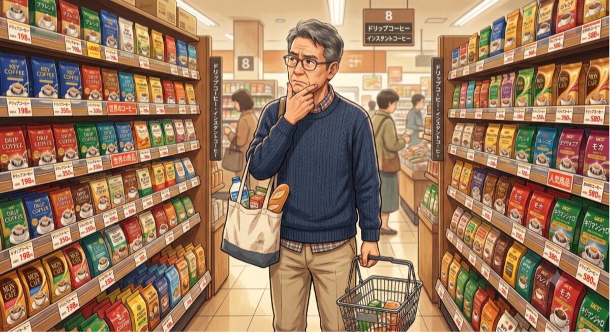
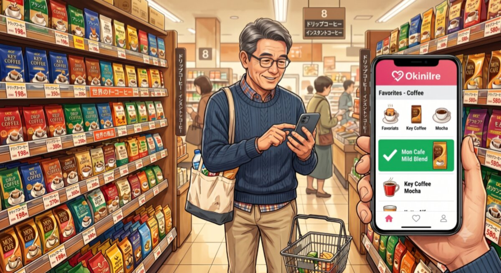
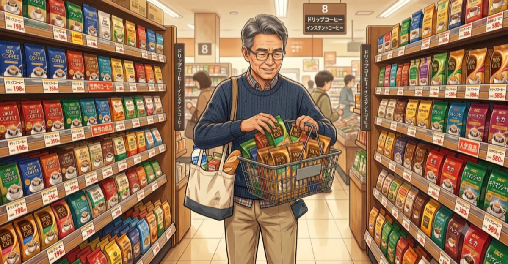

Groups and subgroups
Start from Home and create a tree-style structure that keeps favorites tidy and easy to find.
Favorites Tree for iPhone
OkiniIre is a simple tree-style organizer for saving, grouping, and rediscovering the links, wish list ideas, places, photos, notes, and collections you care about.
Notes, photos, and a place in your tree.
Why OkiniIre



Built from the app implementation
Start from Home and create a tree-style structure that keeps favorites tidy and easy to find.
Each item can include a display name, optional notes, and multiple images from your device or camera.
View thumbnails in the list, drag to reorder, and move items between groups as your collection changes.
OkiniIre supports English and Japanese so the app feels natural in either language.
New: Search
Can't remember which group you filed something in? Tap the search icon on any list and look it up — by name, or by a photo you already saved.
Use it for
Use OkiniIre for links, wish list ideas, places to visit, reference photos, notes, and personal collections that become hard to manage when they are all mixed into one flat list.
Download
Keep visual details and written context together, then get back to what matters faster.